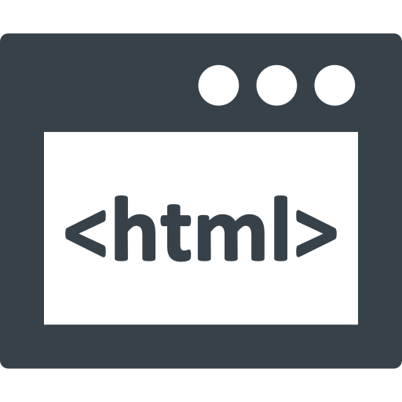
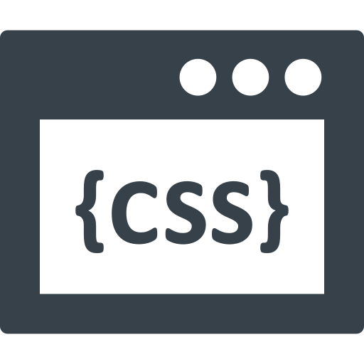
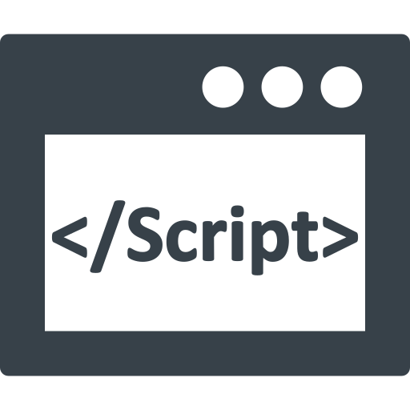

Profile
自己紹介


蓬（よもぎ）
1997年2月生まれ。精神面に持病があり通信制高校を卒業。その後様々な職に就き、コールセンターのテクニカルサポートセンターのスタッフをしていました。
在宅でのお仕事をしていましたが、シフトの融通が利かなかったりクレームが多く離職。しかし在宅でシフトに融通の利くお仕事がしたかったため、小学生の頃からHTML/CSSに触れていた経験を活かして、Webコーダーとして本格的に活動することを決意し、HTML5,CSS3,jQuery,JavaScript,PHP(WordPress)を習得。
一度取り掛かってからの作業スピードの速さと、コールセンターで培った、物事を円滑に進められる優れたコミュニケーション能力を強みとしています。
Skill
使用可能スキル・ツール

HTML5
10年以上

CSS3/Sass
10年以上(Sassは半年以上)

jQuery
jQuery
JavaScript
3年以上
Wordpress
PHP
学習中
●Other : Sass / Git / GitHub / Adobe XD / Visual Studio Code / CLIP STADIO PAINT
●Tools : Windows11 / Android(Pixel 6)
PROS AND CONS
長所と短所
■長所
- 行動力がある（フットワークが軽い）
- 一度火が付くとやり終えるまでの集中力が凄いため、作業速度が早い
- コールセンター勤務で培った、気難しい人とも円滑にコミュニケーションを取る能力
- 人と話すのが好き
■短所
- 思い付いたらすぐ行動するので、計画性がないと言われる
- おしゃべり、うるさいと言われる
- きっかけ（仕事・やるべき事等）がないと火が付かない
■短所が逆に良かったこととして転じた経験
- Webサーバーを変える際、セルフバック増額の期限が2日後だったためその場で違うWebサーバーを契約。15,000円のセルフバックを30日後獲得
- 自分の弱みすら人に話すのが好きなので、弱みを話し合うことで打ち解けることが出来た
- 普段家でダラダラしていることが多いが、主人からやるべき事を指示されたり、ペットの為の世話なら迅速に行える
Contact
お問い合わせ